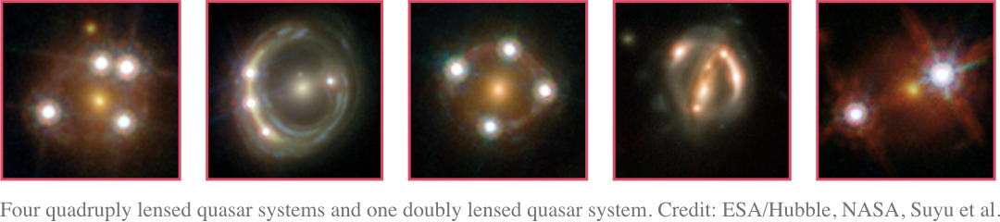

Cosmology with strong gravitational lenses
A series of projects with a common goal to measure cosmological parameters, in particular the Hubble constant, from time-delay measurements in strongly lensed quasars and supernovae.
A series of public software designed to carry out different steps of the time-delay cosmography analysis.
A full database of confirmed strongly lensed sources such as quasars, galaxies and supernovae, as well as strong lens candidates.
In the framework of the standard cosmological model, measurements of the Hubble constant with different cosmological probes lead to results in significant tension with each other. In order to assess whether this tension is due to unaccounted systematic errors, or is hinting towards an extension of the cosmological model, we need techniques that are both precise and truly independent of each other.
Time-delay cosmography is an emerging probe, which consists in extracting cosmological information from photometrically variable sources lensed by a foreground mass. The idea was originally proposed by Sjur Refsdal, who suggested to use supernovae as lensed sources. The implementation was, however, first realised with quasars.
If a distant quasar or supernova is affected by strong gravitational lensing, its propagating wavefront splits as it passes next to the foreground mass, forming several images, as shown on the figure below. The wavefronts emitted along each lensed light-path are delayed in time with respect to each other due to the geometrical differences between the light-paths, and the gravitational potential well of the lens. The time delay thus depends on geometry of the space-time, i.e. the Hubble constant, and on the mass distribution of the lensing object and all objects along the line of sight.
In practice, the time delays are measured by following the photometric variations of the lensed source, which are seen with a time lag in the observer’s plane. Turning this quantity into an estimate of the Hubble constant requires a measurement of the time delay itself; a model for the mass potential of the lensing galaxy; and an account for all contributing mass between the observer and the lensed source, the so called effect of the environment and the line of sight.